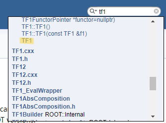
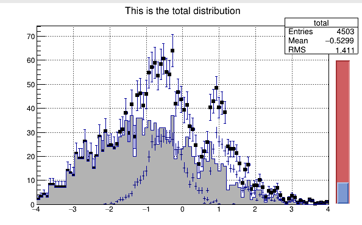

This is a quick start for newbies in HEP to get familiar with Linux server, C++ programing and so on.
It’s always hard for beginners to get familiar with HEP as you have to master both coding and particle physics. This post is expected to lower the threshold of programing under Linux, so that to quickly get involved into some particular work. This post refers to many many articles or tutorials available on the internet. So in this aspect, what this post do is just telling you where you can find the reference to quickly get falimiar with one perticular field.
Note: Expected time consumption sections below is an estimated time to learn one thing. It assumes you only focus on one thing in this time. So, please don’t be frustrated if you are slower than the expected time. Instead, this time is to remind you to ask for help if you are stacked in one step for a long time.
Linux and Vim Tutorial
For people always working under Windows, It’s natural to feel helpless when you face the Linux terminal for the first time. Some basic shell commands will tell you how to explore the world of a linux system. On the other hand, as a widely used built-in editor, Vim is famous for its sharp learning curve. Some basic knowledge about Vim will help you get free from the limit of mouse. I believe you would love the feeling of coding under Vim and Linux soon!
Linux Tutorial
The first part is about Linux tutorial. There is a very easy-to-understand tutorial in Linux Tutorial for Beginners. You are expected to master the basic aspects like file and directory operation, file system navigation, the concept of wildcards, permissions and so on. The basic idea about shell scripts should also be familiared.
A Quick Task
On the ui of USTC, You can find many files under this directory: ustcfs/BES3User/2019/jiazk/sigma2pg/STana/1/incMC/round02.
1, Please count how many files with root format are there.
2, for text files named after *.bosslog, please count the number of good files. A good file is defined as containing both ApplicationMgr INFO Application Manager Finalized successfully and ApplicationMgr INFO Application Manager Terminated successfully.
3, Write these two tasks into a shell script.
Tips: The possible commands may be used include find, grep, ls. The detailed usage of the commands can be accessed using man <command-name>,<command-name> --help or Goodle.
Expected Time Consumption
A week for study and one day for the task.
Initial Exploration in Vim
The most famous question about Vim on Stackoverflow is “How do I exit the Vim editor”. I guess people confused about that must not know the command vimtutor, an official hands-on tutorial for beginners to get familiar with Vim.
Please follow this tutorial to get familiar with Vim. You are expected to know how to edit and skim through a file with only the keyboard. You should also understand the philosphy of Vim – how to master the file edition with the help of three edition modes.
Expected Time Consumption
1-2 days.
Further Reading
When you are spared, I strongly recommand you to learn more about Vim. I list two references here, one is a detailed introduction to Vim, and the other is about how to build a so called C++ IDE with vim.
如何在 Linux 下利用 Vim 搭建 C/C++ 开发环境?
You may also refer to my vimrc in /home/jiazk/.vimrc from L. 1 to L. 130 for some useful plugin-indepent configs.
Get Started with C++ Programing
I suppose you have some programing basics about C but have not tried to program under Linux or using C++. So this section is designed to make you know how to compile an executable program under Linux and the major difference between C and C++.
You are expected to get familiar with some most frequently used concepts in C++, like namespace, class, vector and iterator. This is intended to make the C++ code “readable” for you because it would spend you some time to progress from modifying existing code to coding your own code.
An excerpt of “C++ Primer” can be found in USTC netdisc. The book has some hands-on tests, which I suggest to do every of them.
A Quick Task
Two code blocks are shown below. Please predict the program output first. Then, execute them under Linux and check the output.
1 | // Test about parameter transportation between function - 1 |
1 | // Test about parameter transportation between function - 2 |
Expected Time Consumption
3-7 days for study and one minute for the test~
Further Reading
Google is a good reference for C++ study, also the “C++ Primer”.
ROOT Tutorial
ROOT is an object-oriented program and library developed by CERN. It was originally designed for particle physics data analysis and contains several features specific to this field, but it is also used in other applications such as astronomy and data mining.
ROOT is a very mature framework based on C++. All the modern HEP experiments use ROOT more or less. So it’s necessary to get familiar with the usage of ROOT before get involved into your work. A well written primer can be found in ROOT Primer.
By looking through the primer, the most important concept you have to master is histogram. You are expected to know what a histogram is, how to convert data into histogram, how to draw them, how to customize their properties… Histogram is very important because physics analysis in HEP are all statistical analysis and histogram is an useful and powerful tool to understand many things in statictics.
Data IO is also very important for the subsequent work because ROOT has its own data IO library. So it’s necessary to know how to read and write data from or into a ROOT file.
Please skip the section about “Toy Monte Carlo Experiments” and “ROOT in Python”.
References
Doxygen document is a collection of all the classes and libraries in a C++ project. A good C++ project always has a well-explained doxygen document, which is a very good reference for getting familiar with a C++ project.
You may refer to ROOT Doxygen Document for all the functions available in a class. For example, if you want to know something about TF1 class, search TF1 in the search box in th upper right corner.
By clicking the link marked as yellow in the following plot, you’ll be directed to this webpage. and you can find all you want to know here!

ROOT User Guide is a more detailed tutorial for ROOT. You may use it as a dictionary.
Some official code examples can be found in $ROOTSYS/tutorials. The examples are fruitful so you’ll always find what you want to achieve can be found in the official examples. All you need to do is to customize them~
Some Tests
1, copy $ROOTSYS/tutorials/hist/hsum.C to your own directory and execute it. By customizing the script, change the black, squared dots into blue, circle ones. Change the color of error bar into
red. For the histogram with very small dots and thin error bars at the range of [-2,1], understand why it looks like that and draw it as the grey filled area shown in the plot. Let the grids disappear.

2, copy $ROOTSYS/tutorials/tree/tree1.C to your own directory and execute it. For the generated file tree1.root, select the events satisfying px>0 and save them into a new root file. Realize this task with the following method: Use TTree class and CopyTree function in it. You may refer to the CreateFriendTree() function in $ROOTSYS/tutorials/tree/treefriend.C. Then, repeat the job using TChain class instead of TTree. What’s the difference between TTree and TChain?
Expected Time Consumption
The study period is expected from one week to one month. Half of a day for tests.